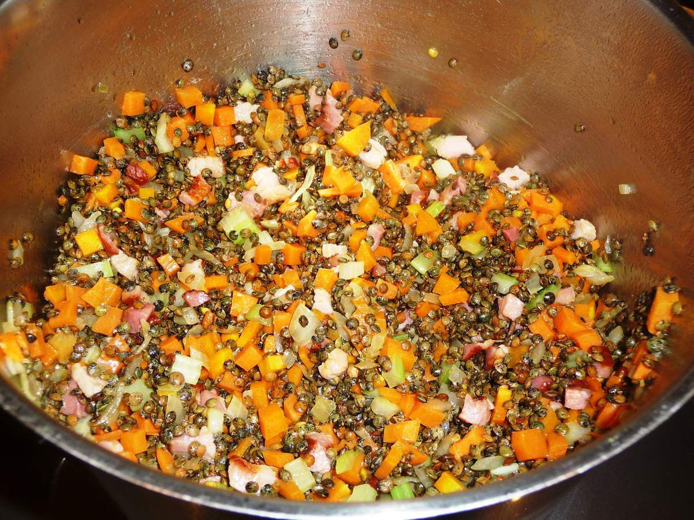

Lentilles

Liste d'ingrédients
- Lentilles vertes sèches
- Eau
- Oignon, haché
- Carottes, coupées en rondelles
- Céleri, coupé en dés
- Ail, haché
- Tomates en dés en conserve
- Bouillon de légumes
- Thym séché
- Feuille de laurier
- Sel et poivre, au goût
- Huile d'olive
Description de la recette
- Dans une grande casserole, faites chauffer un peu d'huile d'olive à feu moyen.
- Ajoutez l'oignon, l'ail, les carottes et le céleri dans la casserole et faites revenir pendant quelques minutes jusqu'à ce qu'ils soient tendres.
- Ajoutez les lentilles, les tomates en dés, le bouillon de légumes, le thym, la feuille de laurier, le sel et le poivre dans la casserole. Mélangez bien.
- Portez le tout à ébullition, puis réduisez le feu à doux et laissez mijoter à couvert pendant environ 30 à 40 minutes, ou jusqu'à ce que les lentilles soient tendres.
- Retirez la feuille de laurier et servez chaud.